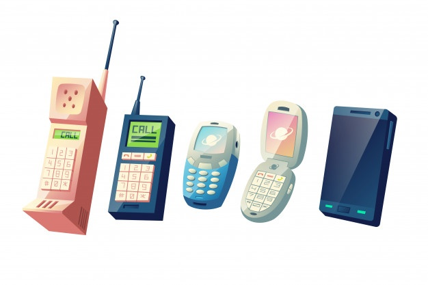

Redes Celulares
Los teléfonos móviles funcionan enviando y recibiendo señales de radio de baja potencia. Las señales se intercambian con antenas que están conectadas a transmisores y receptores de radio, comúnmente conocidos como estaciones base de telefonía móvil. Las estaciones base están conectadas al resto de las redes de telefonía fija y móvil y pasan la señal / llamada a esas redes.
Telefono Celular
Se llaman asi porque el area fisica que cubren tiene un formato de cedulas. El origen del telefono celular se fue por el año 1973 cuando la compañia de electronica de consumo masivo Motorola, que se llamo Motorola DynaTac 8000c.
Red de comunicación móvil de Primera generación (1G)
La 1ª red de comunicación móvil automatizada comercial fue lanzado por NTT en Japón en 1979, seguida por el lanzamiento del sistema de Telefonía Móvil Nórdica (NMT) en Dinamarca, Finlandia, Noruega y Suecia, en 1981.
- Año - 1970 - 1980
- Estándares - AMPS (Advanced Mobile Phone System).
- Servicios - Sólo voz
- Tecnología - Analogica
- Velocidad - 1kbps a 2,4 kbps
Red de comunicación móvil de Segunda Generación (2G)
La tecnología GSM fue la primera en facilitar voz y datos digitales, así como roaming internacional permitiendo al cliente ir de un lugar a otro.
- Año - 1980 -1990
- Tecnología - Digital
- Velocidad - 14kbps a 64 Kbps
- Servicios: Voz Digital, SMS
- Ancho de banda / canal - GSM divide cada canal de 200 kHz en bloques de 25 kHz
Red de comunicación móvil de Tercera Generación (3G)
El objetivo de los sistemas 3G fue ofrecer aumento de las tasas de datos, facilitar el crecimiento, mayor capacidad de voz y datos, soporte a diversas aplicaciones y alta transmisión de datos a bajo coste. Los datos se envían a través de la tecnología de una tecnología llamada Packet Switching. Las llamadas de voz se traducen mediante conmutación de circuitos.
- Año - 2000
- Estándares - UMTS (WCDMA) basado en GSM (Global Systems for Mobile) infraestructura del sistema 2G, estandarizado por el 3GPP.
- Servicios - Telefonía móvil de voz, acceso a Internet de alta velocidad
- Tecnologías de multiplexación y acceso
- Ancho de banda: de 5 a 20 MHz
Red de comunicación móvil de Cuarta Generación (4G)
El sistema móvil de cuarta generación está basado totalmente en IP. El objetivo principal de la tecnología 4G es proporcionar alta velocidad, alta calidad, alta capacidad, seguridad y servicios de bajo coste para servicios de voz y datos, multimedia e internet a través de IP. Para usar la red de comunicación móvil 4G, los terminales de los usuarios deben ser capaces de seleccionar el sistema inalámbrico de destino. Para proporcionar servicios inalámbricos en cualquier momento y en cualquier lugar, la movilidad del terminal es un factor clave en 4G.
- Inicio - años de 2010
- Estándares - Long-Term Evolution Time-Division Duplex (LTE-TDD y LTE-FDD)
- Velocidad - 100 Mbps en movimiento y 1 Gbps cuando se permanece inmóvil.
- Telefonía IP
- Ancho de Banda - 5-20 MHz, opcionalmente hasta 40 MHz
- Tecnologías de multiplexación / acceso - OFDM, MC-CDMA, CDMA
- Servicios - acceso móvil web, telefonía IP, servicios de juegos, TV móvil de alta definición, videoconferencia
Red de comunicación móvil de Quinta Generación (5G)
La capa física y de enlace de datos define la tecnología inalámbrica 5G indicando que es una tecnología Open Wireless Architecture (OWA) . Para realizar esto, la capa de red está subdividida en dos capas; capa de red superior para el terminal móvil y un menor nivel de red para la interfaz. Aquí todo el enrutamiento se basa en direcciones IP que serían diferentes en cada red IP en todo el mundo. En la tecnología 5G la pérdida de velocidad de bits se supera mediante el Protocolo de Transporte Abierta (OTP). El OTP es soportado por Transporte y capa de sesión. La capa de aplicación es para la calidad de la gestión de servicio a través de varios tipos de redes. 5G adelanta un verdadero mundo inalámbrico Wireless-World Wide Web (WWWW).
- Inicio - 2015
- Estándares - banda ancha IP LAN / W AN / PAN & WWWW
- Velocidad - 1 a 10 Gbps.
- Soporta Internet de las Cosas y M2M - 100 veces más dispositivos conectados,
- Ancho de Banda - 1.000x ancho de banda por unidad de superficie.
- Tecnologías de multiplexación / Access - CDMA y BDMA
- Servicios: - Algunas de las aplicaciones son importantes - personas y dispositivos conectados en cualquier lugar en cualquier momento.